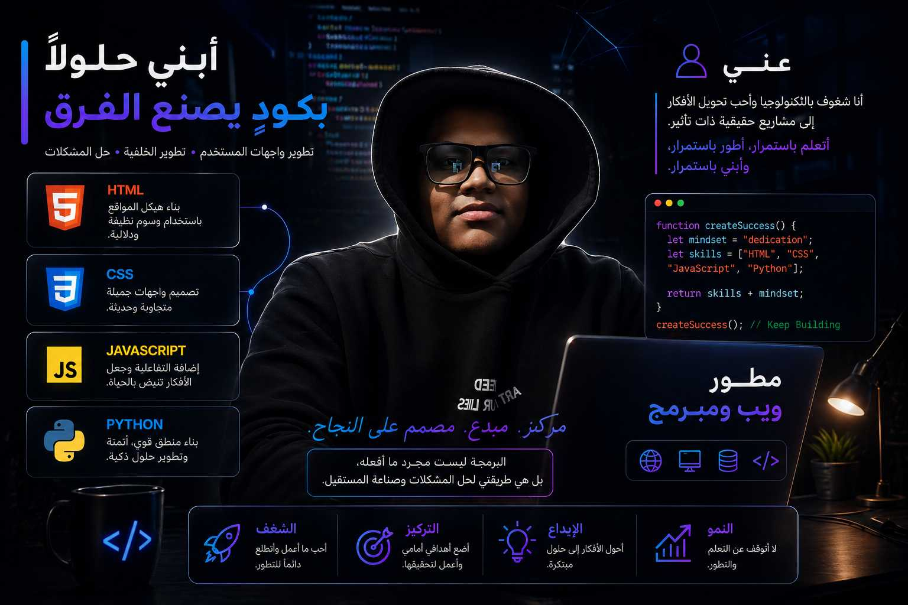
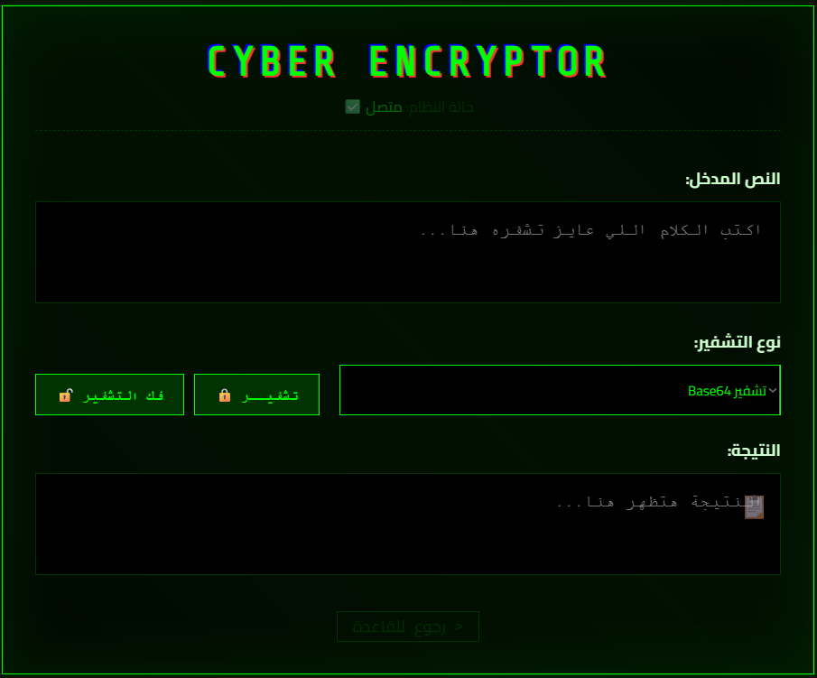
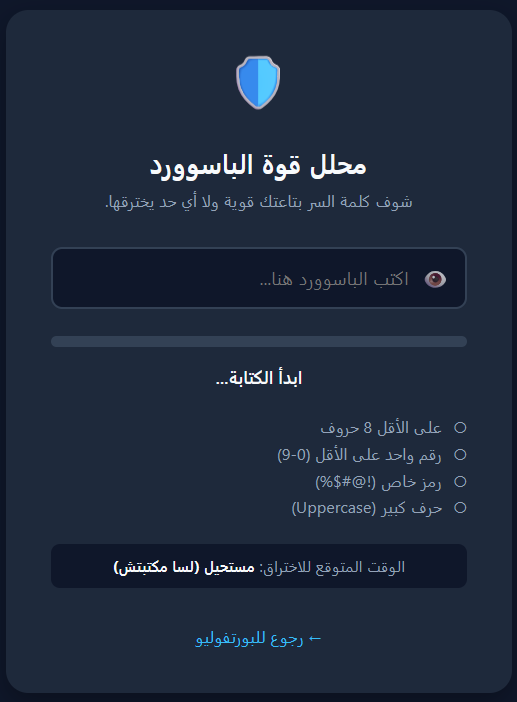
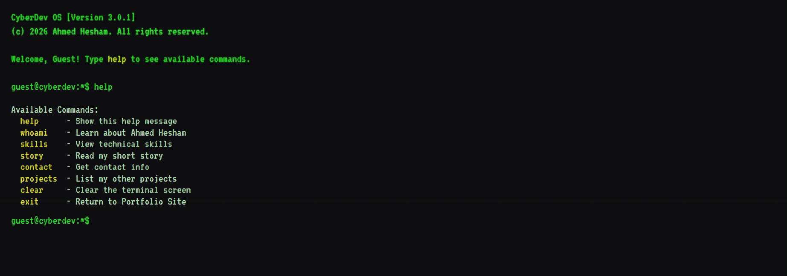
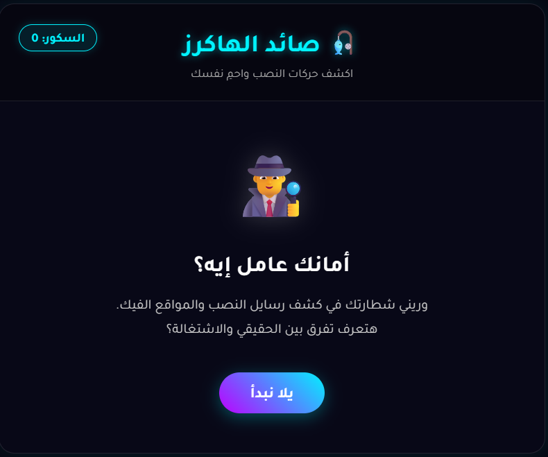
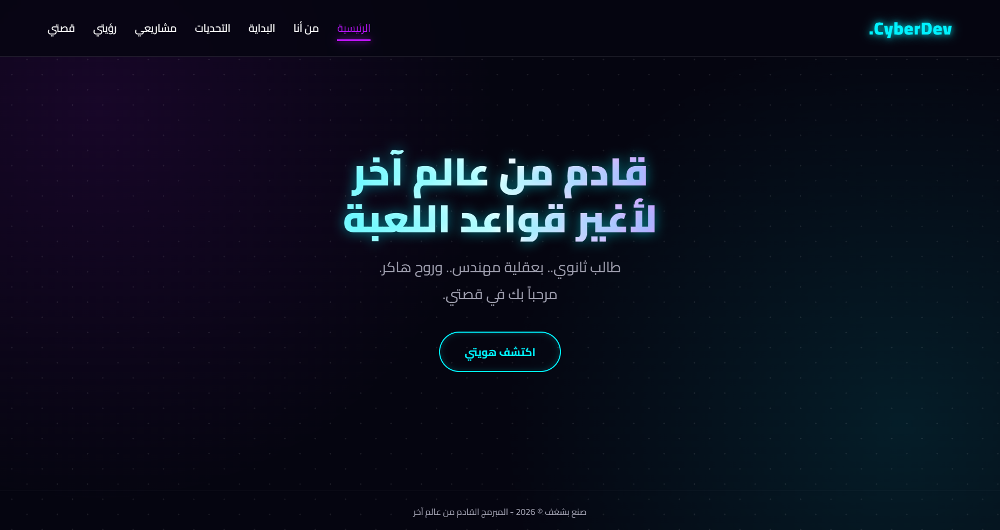

صفحات هبوط
صفحة مركزة تشرح العرض وتدعم التحويل إلى تواصل أو شراء.
Ahmed Dev / CyberDev Lab
مطور ويب أساعد الشركات ورواد الأعمال على تحويل أفكارهم إلى مواقع سريعة، مرتبة، وسهلة الاستخدام. Ahmed Dev هو هويتي المهنية، وCyberDev هو مختبري التقني والأمني.
متاح لمشاريع جديدة

أبني صفحات وتجارب ويب تركّز على الوضوح، الأداء، وسهولة الوصول.
صفحة مركزة تشرح العرض وتدعم التحويل إلى تواصل أو شراء.
واجهة موثوقة تضع خدمات شركتك وقصتها ووسائل التواصل في مكان واضح.
تجربة تسوق مرتبة تساعد الزائر على فهم المنتج واتخاذ قرار أسرع.
واجهات منظمة للمحتوى والدروس تساعد المتعلم على التركيز.
مجموعة من المشاريع العملية التي تجمع بين الأمن السيبراني، سهولة الاستخدام، وواجهات واضحة.

أداة تعليمية للترميزات والخوارزميات البسيطة مثل Caesar وBase64 وHex وBinary، وليست بديلًا عن التشفير الأمني الحقيقي.
التقنيات: HTML · CSS · JavaScript
أداة تعليمية تحلل خصائص كلمة المرور وتعرض نقاط القوة والضعف بشكل فوري.
التقنيات: HTML · CSS · JavaScript
واجهة تفاعلية تقدم الهوية التقنية والمشاريع من خلال تجربة طرفية مختلفة.
التقنيات: HTML · CSS · JavaScript
أداة توعوية تساعد المستخدم على التعرف على علامات رسائل ومواقع التصيد.
التقنيات: HTML · CSS · JavaScriptتقنيات أستخدمها لتحويل الفكرة إلى واجهة عملية، سريعة، وقابلة للتطوير.
Ahmed Dev هو هويتي المهنية في تطوير الويب. أما CyberDev فهو مختبري التقني الذي أستكشف من خلاله الأمن السيبراني والأدوات التفاعلية.
زيارة موقعي الشخصي
أنا أحمد هشام، مطور ويب أعمل تحت اسم Ahmed Dev لبناء مواقع تحترم وقت المستخدم وتساعد أصحاب المشاريع على الظهور بصورة أوضح على الإنترنت.
CyberDev هو الجانب التجريبي والأمني من هويتي، ومن خلاله أبني أدوات تفاعلية وأحوّل كل تجربة إلى مهارة عملية أفضل.
ابعث لي نبذة بسيطة عن مشروعك، والهدف الذي تريد أن يحققه الموقع.